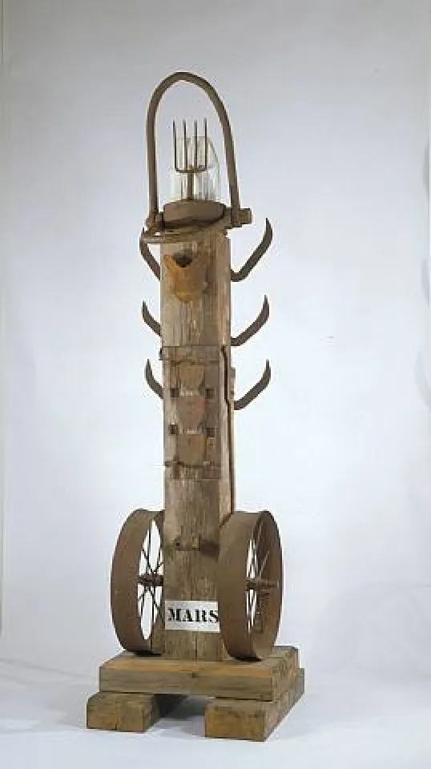

<!DOCTYPE html>
<html lang="fr" x-data="{menuIsOpen: false}" :class="{noscroll:menuIsOpen,}"></html>
<html lang="fr">
<head>
    <meta charset="UTF-8">
    <meta http-equiv="X-UA-Compatible" content="IE=edge">
    <meta name="viewport" content="width=device-width, initial-scale=1.0">
    <title>Daay'o</title>
    <script defer src="https://unpkg.com/alpinejs"></script>
    <link rel="stylesheet" href="../src/css/style.css">
    
</head>
<body>

    <header>

        <button aria-controls="mainNav" @click="menuIsOpen = ! menuIsOpen"
        class="header__icone--menu-burger">
        
        </button>
        <nav
        id="mainNav" x-show="menuIsOpen" x-transition.duration.800ms class="menu">

        <ul>
            <li><a class="menu__list" href="./serguei_paradjanov.html">Sergueï paradjanov</a></li>
            <li><a class="menu__list" href="./leonid_sejka.html">Leonid Sejka</a></li>
            <li><a class="menu__list" href="./robert_rauschenberg.html">Robert Rauschenberg</a></li>
            <li><a class="menu__list" href="./jospeh_beuys.html">Joseph Beuys</a></li>
            <li><a class="menu__list" href="./billeterie.html"> Billetterie</a></li>
        </ul>
        </nav>

        <a href="../en/home_page.html">
            
        </a>

        <a href="./index.html"><h1 class="header__nom--site">Daay'o</h1></a>

    </header>

    <section class="block__article">

        <h2 class="titre__page-a-propos">Le Neo Dada</h2>

        <p class="text__page-a-propos">
            Le Néo-Dada est un mouvement artistique contemporain qui présente des similitudes dans ses méthodes et ses intentions avec le mouvement Dada. 
        </p>

        <p class="text__page-a-propos">
            Bien qu'il ait principalement les mêmes objectifs que ce dernier, 
            le Néo-Dada « met l'accent sur la production de l'œuvre d'art plutôt que sur le concept généré par celle-ci ». 
        </p>

        <p class="text__page-a-propos">
            Il a contribué à l'essor du Fluxus, du Pop art et du Nouveau réalisme.
        </p>

        <p class="text__page-a-propos">
            Le terme a été popularisé par Barbara Rose dans les années 1960 et se réfère principalement, 
            mais pas exclusivement, à un groupe d'œuvres d'art créées durant cette période et la décennie précédente.
        </p>

    </section>

    <section class="frise">

        <div class="motif_barre-barre--gauche"></div>

            <div class="frise__gauche">
                
                <a href="./jospeh_beuys.html"><p class="titre__frise">Josef Beuys</p></a>
                <a href="./jospeh_beuys.html"><p class="titre__frise">1921-1986</p></a>
            </div>

            <div class="frise__droite">
                
                <a href="./serguei_paradjanov.html"><p class="titre__frise">Sergueï Paradjnov</p></a>
                <a href="./serguei_paradjanov.html"><p class="titre__frise">1924-1990</p></a>
            </div>

            <div class="frise__gauche">
                
                <a href="./robert_rauschenberg.html"><p class="titre__frise">Robert Rauschenberg</p></a>
                <a href="./robert_rauschenberg.html"><p class="titre__frise">1925-2008</p></a>
            </div>

            <div class="frise__droite">
                
                <a href="./leonid_sejka.html"><p class="titre__frise">Leonid Sejka</p></a>
                <a href="./leonid_sejka.html"><p class="titre__frise">1932-1970</p></a>
            </div>
        
        <div class="motif_barre-barre--droite"></div>

    </section>

    <section class="block__article">

        <h2 class="titre__sculpture_mars">Mars</h2>

        <p class="text__page-a-propos">Mars est une sculpture qui date de 1990 faite par Robert Indiana</p>

        

    </section>

    <footer>

        <a href="./index.html"><h1 class="footer__nom-site">Daay'o</h1></a>

        <ul>
            
            <li class="footer__pages-annexes">
                <a href="./a_propos.html">A propos</a>
            </li>

            <li class="footer__pages-annexes">
                <a href="./contact.html">Contact</a>
            </li>
        </ul>

        <ul class="footer__reseaux">
            <li>
                <a href="">
                    </a>
            </li>

            <li>
                <a href="">
                    </a>
            </li>

            <li>
                <a href="">
                    </a>
                </li>
        </ul>

        <a class="footer_mailto" href="">event-daayo@gmail.com</a>

        <p class="footer__copyright">Copyright © 2023-Faris Halepovic-MMi 1A2 Montbéliard</p>

    </footer>
    
</body>
</html>